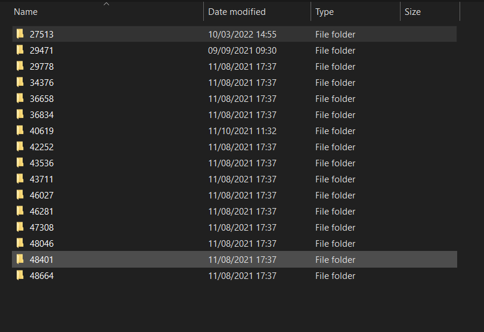
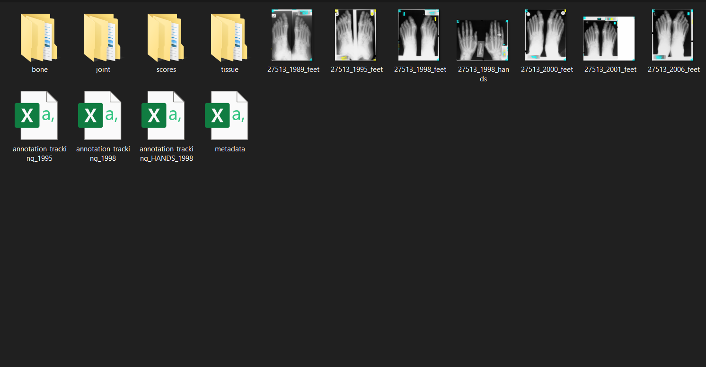
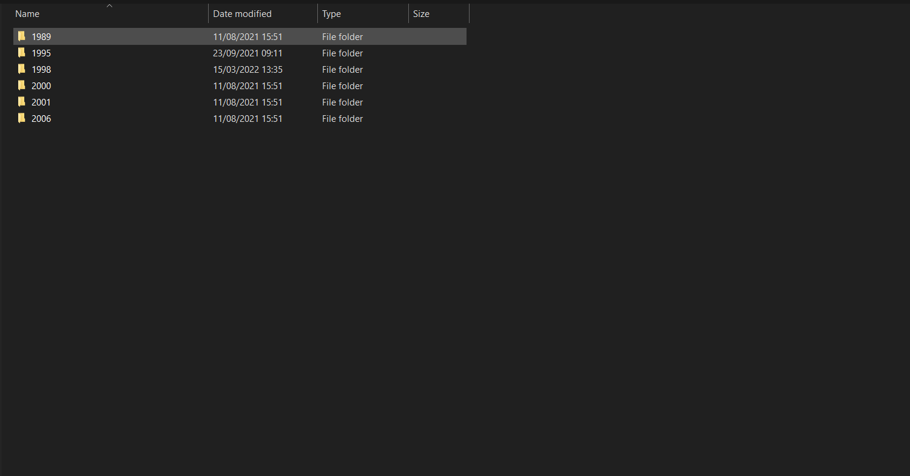

Aspax Annotator is a software for PsA xray annotation and labelling. It allows the user to contour structures (bones and joints) and assign a damage score to the structure identified. As such there are two main features to aspax, namely
Once the working directory has been set and studies created (see how to set the working directory and add studies here), the working directory should look like this (the numbers corresond different study ids):
ASPAX stores every xray corresponding to one study id (usually this is the anonymised patient id) in the same location. The study folder will look like this:
Notice that there is a folder for each type of annotation (bone, tissue, joint) and for the scores scores. These folders hold annotations/scores in different folders corresponding to the date that the xray was taken (for PsA, this will usually be the year).
ASPAX stores each annotation as a .txt file, and each set of scores is stored in a .csv file.
The aim of ASPAX is to create a labelled dataset for automatic detection and assessment of damage in PsA xrays, and as such the annotations need to be shared with the research team. Unfortunately, this step needs to be done manually, and will be handled in future releases automatically.
Follow the following steps to share your annotations
There are two ways to load xrays into ASPAX, the first is to create a new project, and the second is to load an existing project
A project can be started with one xray. It is assumed that the xray in question will correspond to one study or patient id, and that it will have a date of acquisition. To create a new project, we will set the working directory and then create a study from an xray image.
To change your working directory:
To create a new study
To add an xray to an existing study
Collaboration with the MALARD group will usually involve annotating pre-selected xrays, which will be given to you in a ready to annotate state. It might also be the case that you have annotated some xrays and want to continue doing this in a separate session. In both cases, you will have to load an existing project. These are the steps:
You are able to move the individual dots on the polyline by holding down Ctrl
Note that a know bug in all versions occurs when one drags the rectangle too far away from its initial point. You are advised to not do this otherwise the program will crash.
Simply click on View in the annotation pane.
To score a set of joints: